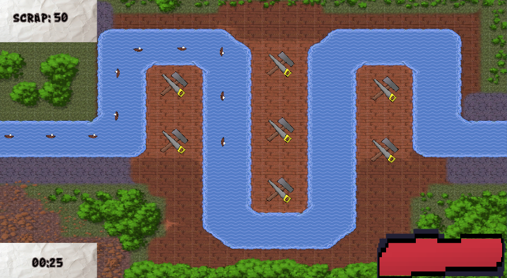

My own tower defense game

Made with Unity!
Made with Unity!
This project was made with an intention to know how to make a tower defense game by doing it without a group of people. I got this project from school and I had about 6 weeks for the project to be done. Eventually I set in for an normal tower defense but the enemies were boats. The goal of the game is to survive as long as possible. You will have an timer in the bottem left and every second the amount off enemies increased.
Because this was an solo project I have almost done everything from the ground up. I first started with make the map so I could see how the layout would fit in. I eventually made the map with website where I could customise the tiles as I liked. When I was done with the map I then downloaded it and put in in the game. All of the art except for the map is made by me and I have even dug into a bit of pixel art when starting the project. The towers that are made for the game are also made with pixel art that I made. Personally I am not so good at it but I really want to improve with it. After making the map I went on to making a spawn system. I first wanted to make a wave system but I eventually went for the on every second the enemy gets stronger and stronger. After that I needed to make a tower spawning system and I made specific points to make the towers spawn at that location.